二叉树、平衡二叉树、B树介绍
介绍 二叉树，完全二叉树，满二叉树，二叉排序树，平衡二叉树，红黑树，B数，B+树，B*树 等数据结构
转自二叉树，完全二叉树，满二叉树，二叉排序树，平衡二叉树，红黑树，B数，B-树，B+树，B*树
转自从2-3-4树到红黑树（上）
转自AVL树原理及实现（C语言实现以及Java语言实现）
- 二叉树 Binary Tree
- 完全二叉树 Complete Binary Tree
- 满二叉树 Full Binary Tree
- 二叉排序树 Binary Sort Tree
- 平衡二叉树 Balanced Binary Tree
- B树
- B+树
- B*树
二叉树 Binary Tree
二叉树：
二叉树是每个节点最多有两个子树的树结构，
是n(n>=0)个结点的有限集合，
它或者是空树（n=0），
或者是由一个根结点及两颗互不相交的、分别称为左子树和右子树的二叉树所组成。
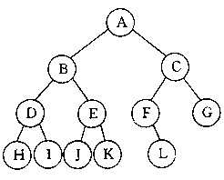
完全二叉树 Complete Binary Tree
完全二叉树：
除最后一层外，每一层上的结点数均达到最大值；
在最后一层上只缺少右边的若干结点；
叶节点只能出现在最下层和次下层，并且最下面一层的结点都集中在该层最左边的若干位置的二叉树
完全二叉树是由满二叉树而引出来的。对于深度为K的，有n个结点的二叉树，当且仅当其每一个结点都与深度为K的满二叉树中编号从1至n的结点一一对应时称之为完全二叉树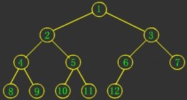
满二叉树 Full Binary Tree
满二叉树：
除最后一层外，每一层上的所有结点都有两个子结点；
满二叉树是一种特殊的完全二叉树;
定义
- 国内定义:一个二叉树，如果每一个层的结点数都达到最大值，则这个二叉树就是满二叉树。也就是说，如果一个二叉树的层数为K，且结点总数是 2k -1 ，则它就是满二叉树。 也就是说，满二叉树不存在度为1的结点。
- 国外(国际)定义:a binary tree T is full if each node is either a leaf orpossesses exactly two childnodes.
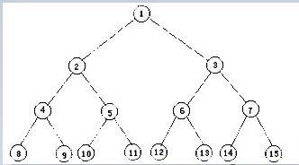
二叉排序树 Binary Sort Tree
二叉排序树（Binary Sort Tree），又称二叉查找树（Binary Search Tree），亦称二叉搜索树：
二叉树中，每个节点都不比它左子树的任意元素小，而且不比它的右子树的任意元素大。又叫二叉搜索树。
定义：
- 若左子树不空，则左子树上所有结点的值均小于或等于它的根结点的值；
- 若右子树不空，则右子树上所有结点的值均大于或等于它的根结点的值；
- 左、右子树也分别为二叉排序树；
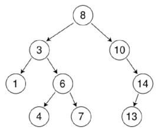
平衡二叉树 Balanced Binary Tree
平衡二叉树（Balanced Binary Tree）
又被称为AVL树（有别于AVL算法）
是二叉排序树的一个进化体，也是第一个引入平衡概念的二叉树性质：
它是一棵空树或它的左右两个子树的高度差的绝对值不超过1，并且左右两个子树都是一棵平衡二叉树，如果插入或者删除一个节点使得高度之差大于1，就要进行节点之间的旋转(这个方案很好的解决了二叉查找树退化成链表的)，将二叉树重新维持在一个平衡状态。
同时，平衡二叉树必定是二叉搜索树，反之则不一定。复杂度：
插入，查找，删除的时间复杂度最好情况和最坏情况都维持在 O(log n)
但是频繁旋转会使插入和删除牺牲掉O(logN)左右的时间，不过相对二叉查找树来说，时间上稳定了很多。平衡二叉树的常用实现方法有AVL、红黑树、AA-树、替罪羊树、Treap、伸展树、节点大小平衡树SBT等
AVL树
AVL树是最先发明的自平衡二叉树。
名字来源:
AVL树得名于它的发明者 G.M. Adelson-Velsky 和 E.M. Landis，他们在 1962 年的论文 "An algorithm for the organization of information" 中发表了它。应用：
AVL是严格平衡树，因此在增加或者删除节点的时候，根据不同情况，旋转的次数比红黑树要多；
红黑是弱平衡的，用非严格的平衡来换取增删节点时候旋转次数的降低；
AVL是一种高度平衡的二叉树，所以通常的结果是，维护这种高度平衡所付出的代价比从中获得的效率收益还大，故而实际的应用不多,更多的地方是用追求局部而不是非常严格整体平衡的红黑树。当然，如果场景中对插入删除不频繁，只是对查找特别有要求，AVL还是优于红黑的。
windows对进程地址空间的管理用到了AVL树。复杂度：
查找、插入和删除在平均和最坏情况下都是 \(O(logn)\)
增加和删除可能需要通过一次或多次树旋转来重新平衡这个树。特点：
1. 本身首先是一棵二叉搜索树。
2. 带有平衡条件：每个结点的左右子树的高度之差的绝对值（平衡因子）最多为1。也就是说，AVL树，本质上是带了平衡功能的二叉查找树（二叉排序树，二叉搜索树）。
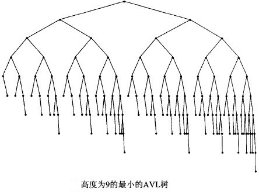
红黑树 Red Black Tree
红黑树是一种自平衡二叉查找树 典型的用途是实现关联数组
名字来源：
是在1972年由Rudolf Bayer发明的，当时被称为平衡二叉B树（symmetric binary B-trees）。后来，在1978年被 Leo J. Guibas 和 Robert Sedgewick 修改为如今的“红黑树”。应用：
它的统计性能要好于平衡二叉树，因此，红黑树在很多地方都有应用。
1. 在C++ STL中，很多部分(包括set, multiset, map, multimap)应用了红黑树实现
2. 著名的linux进程调度Completely Fair Scheduler,用红黑树管理进程控制块
3. epoll在内核中的实现，用红黑树管理事件块
4. nginx中，用红黑树管理timer等
5. Java的TreeMap实现复杂度：
查找，插入和删除 的复杂度是 \(O(logn)\)
红黑树和AVL树类似，都是在进行插入和删除操作时通过特定操作保持二叉查找树的平衡，从而获得较高的查找性能。性质：
红黑树上每个结点内含五个域，color，key，left，right，p。如果相应的指针域没有，则设为NIL。
红黑树是每个节点都带有颜色属性的二叉查找树，颜色或红色或黑色。在二叉查找树强制一般要求以外，对于任何有效的红黑树我们增加了如下的额外要求:
- 节点是红色或黑色。
- 根节点是黑色。
- 每个叶节点（NIL节点，空节点）是黑色的。
- 每个红色节点的两个子节点都是黑色。(从每个叶子到根的所有路径上不能有两个连续的红色节点)
- 从任一节点到其每个叶子的所有路径都包含相同数目的黑色节点。
这些约束强制了红黑树的关键性质: 从根到叶子的最长的可能路径不多于最短的可能路径的两倍长。结果是这个树大致上是平衡的。因为操作比如插入、删除和查找某个值的最坏情况时间都要求与树的高度成比例，这个在高度上的理论上限允许红黑树在最坏情况下都是高效的，而不同于普通的二叉查找树。
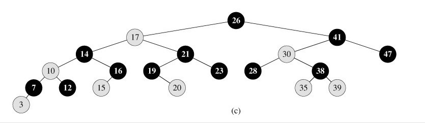
AA树 AA-Tree
AA树（AA-Tree）是计算机科学中数据结构的一种，属于自平衡二叉查找树（Self-balancing binary search tree），是红黑树的变种。
AA树是Arne Andersson教授在1993年在他的论文"Balanced search trees made simple"中介绍，设计的目的是减少红黑树考虑的不同情况。复杂度：
AA树可以在 \(O (log n)\)的时间内做查找，插入和删除，这里的n是树中元素的数目。区别于红黑树的是，AA树的红结点只能作为右叶子。另外AA树为实现方便，不再使用红黑两种颜色，而是用level标记结点，结点中的level相当于红黑树中结点的黑高度。
level的规定满足以下5个条件:
1 .每个叶子的level是1
2. 每个左孩子的level是其父结点的level减1
3. 每个右孩子的level等于其父结点的level或等于其父结点的level减1
4. 每个右孙子的level一定比其祖父的level小
5. 每个level大于1的结点有两个孩子
替罪羊树 Scapegoat Tree
替罪羊树是计算机科学中，一种基于部分重建的自平衡二叉搜索树。
复杂度：
在替罪羊树上，插入或删除节点的平摊最坏时间复杂度是 \(O(logn)\)，搜索节点的最坏时间复杂度是 \(O(logn)\)。在非平衡的二叉搜索树中，每次操作以后检查操作路径，找到最高的满足\(max(size(son_L),size(son_R))>alpha*size(this)\)的结点，重建整个子树。这样就得到了替罪羊树，而被重建的子树的原来的根就被称为替罪羊节点。
替罪羊树的主要思想就是将不平衡的树压成一个序列,然后暴力重构成一颗平衡的树.
这里的平衡指的是:
对于某个 \(0.5<=alpha<=1\)
满足 \(size( son_L(x) )<=alpha*size(x)\)
并且 \(size( son_R(x) )<=alpha*size(x)\),
即这个节点的两棵子树的 size 都不超过以该节点为根的子树的 size ,那么就称这个子树(或节点)是平衡的, alpha 最好不要选 0.5 ,容易T飞,一般选 0.75 就挺好的.
树堆 Treap
树堆，在数据结构中也称Treap，相对于其他的平衡二叉搜索树，Treap的特点是实现简单，且能基本实现随机平衡的结构。
名字来源：
Treap=Tree+Heap定义：
是指有一个随机附加域满足堆的性质的二叉搜索树，其结构相当于以随机数据插入的二叉搜索树。复杂度：
其基本操作的期望时间复杂度为 \(O(logn)\)Treap是一棵二叉排序树，它的左子树和右子树分别是一个Treap，和一般的二叉排序树不同的是，Treap纪录一个额外的数据，就是优先级。Treap在以关键码构成二叉排序树的同时，还满足堆的性质(在这里我们假设节点的优先级大于该节点的孩子的优先级)。但是这里要注意的是Treap和二叉堆有一点不同，就是二叉堆必须是完全二叉树，而Treap可以并不一定是。
如下图 树堆删除节点9 将其优先级值从2=>无穷大 然后进行旋转
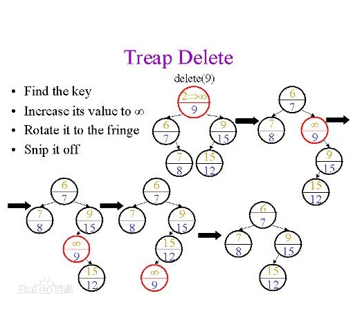
伸展树 Splay Tree
伸展树（Splay Tree），也叫分裂树，是一种二叉排序树，它能在O(log n)内完成插入、查找和删除操作。它由丹尼尔·斯立特Daniel Sleator和罗伯特·恩卓·塔扬Robert Endre Tarjan在1985年发明的。
在伸展树上的一般操作都基于伸展操作：假设想要对一个二叉查找树执行一系列的查找操作，为了使整个查找时间更小，被查频率高的那些条目就应当经常处于靠近树根的位置。于是想到设计一个简单方法， 在每次查找之后对树进行重构，把被查找的条目搬移到离树根近一些的地方。伸展树应运而生。伸展树是一种自调整形式的二叉查找树，它会沿着从某个节点到树根之间的路径，通过一系列的旋转把这个节点搬移到树根去。
优点：
可靠的性能——它的平均效率不输于其他平衡树。
存储所需的内存少——伸展树无需记录额外的什么值来维护树的信息，相对于其他平衡树，内存占用要小缺点：
伸展树最显著的缺点是它有可能会变成一条链。这种情况可能发生在以非降顺序访问n个元素之后。然而均摊的最坏情况是对数级的—— \(O(logn)\)
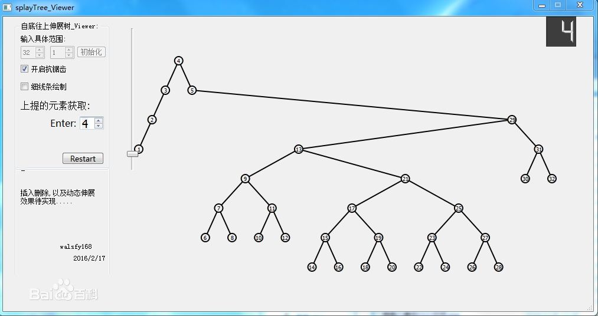
节点大小平衡树 Size Balanced Tree（SBT）
节点大小平衡树 Size Balanced Tree，缩写：SBT是一种自平衡二叉查找树
性质：
Size Balanced Tree（SBT）是一种通过大小（Size）域来保持平衡的二叉搜索树，它也因此得名。它总是满足：
left [T] : 结点 T 的左儿子
right [T] : 结点 T 的右儿子
s[T] : 以T为根的子树的结点个数（大小））
对于SBT的每一个结点 t：
性质(a) \(s[right[t] ]≥s[left[left[t]]], s[right[left[t]]]\)
性质(b) \(s[left[t] ]≥s[right[right[t]]], s[left[right[t]]]\)
即每棵子树的大小不小于其兄弟的子树大小。复杂度：
SBT的高度是\(O(logn)\)，Maintain是 \(O(1)\)，所有主要操作都是 \(O(logn)\)
B树
B树是一种平衡多路搜索树（并不是二叉的）
名字来源:
1970年，R.Bayer和E.mccreight提出了一种适用于外查找的树，它是一种平衡的多叉树，称为B树（或B-树、B_树）。应用:
B/B+树: 用在磁盘文件组织 数据索引和数据库索引。性质：
一棵m阶B树(balanced tree of order m)是一棵平衡的m路搜索树。它或者是空树，或者是满足下列性质的树：
- 根结点至少有两个子女；
- 每个非根节点所包含的关键字个数 j 满足：\(┌m/2┐ - 1 <= j <= m - 1\)；
- 除根结点以外的所有结点（不包括叶子结点）的度数正好是关键字总数加1，故内部子树个数 k 满足：\(┌m/2┐ <= k <= m \)；
所有的叶子结点都位于同一层。
1. 定义任意非叶子结点最多只有M个儿子；且M>2； 2. 根结点的儿子数为[2, M]； 3. 除根结点以外的非叶子结点的儿子数为[M/2, M]； 4. 每个结点存放至少M/2-1（取上整）和至多M-1个关键字；（至少2个关键字） 5. 非叶子结点的关键字个数=指向儿子的指针个数-1； 6. 非叶子结点的关键字：K[1], K[2], …, K[M-1]；且K[i] < K[i+1]； 7. 非叶子结点的指针：P[1], P[2], …, P[M]； 其中P[1]指向关键字小于K[1]的子树， P[M]指向关键字大于K[M-1]的子树， 其它P[i]指向关键字属于(K[i-1], K[i])的子树； 8. 所有叶子结点位于同一层；在B-树中，每个结点中关键字从小到大排列，并且当该结点的孩子是非叶子结点时，该k-1个关键字正好是k个孩子包含的关键字的值域的分划。
因为叶子结点不包含关键字，所以可以把叶子结点看成在树里实际上并不存在外部结点，指向这些外部结点的指针为空，叶子结点的数目正好等于树中所包含的关键字总个数加1。B-树中的一个包含n个关键字，n+1个指针的结点的一般形式为： （n,P0,K1,P1,K2,P2,…,Kn,Pn）其中，Ki为关键字，K1<K2<…<Kn, Pi 是指向包括Ki到Ki+1之间的关键字的子树的指针。
B-树的搜索，从根结点开始，对结点内的关键字（有序）序列进行二分查找，如果命中则结束，否则进入查询关键字所属范围的儿子结点；重复，直到所对应的儿子指针为空，或已经是叶子结点；
性能:
所以B-树的性能总是等价于二分查找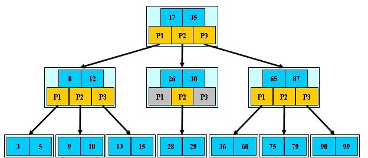
B+树
B+ 树是一种树数据结构，是一个n叉排序树，每个节点通常有多个孩子，一棵B+树包含根节点、内部节点和叶子节点。根节点可能是一个叶子节点，也可能是一个包含两个或两个以上孩子节点的节点。
应用:
B+ 树通常用于数据库和操作系统的文件系统中。NTFS, ReiserFS, NSS, XFS, JFS, ReFS 和BFS等文件系统都在使用B+树作为元数据索引。B+ 树的特点是能够保持数据稳定有序，其插入与修改拥有较稳定的对数时间复杂度。B+ 树元素自底向上插入。定义:
B+树是应文件系统所需而出的一种B树的变型树。一棵m阶的B+树和m阶的B-树的差异在于：
- 有n棵子树的结点中含有n个关键字，每个关键字不保存数据，只用来索引，所有数据都保存在叶子节点。
- 所有的叶子结点中包含了全部关键字的信息，及指向含这些关键字记录的指针，且叶子结点本身依关键字的大小自小而大顺序链接。
所有的非终端结点可以看成是索引部分，结点中仅含其子树（根结点）中的最大（或最小）关键字。
1. 其定义基本与B-树同，除了： 2. 非叶子结点的子树指针与关键字个数相同； 3. 非叶子结点的子树指针P[i]，指向关键字值属于[K[i], K[i+1])的子树（B-树是开区间）； 5. 为所有叶子结点增加一个链指针； 6. 所有关键字都在叶子结点出现；性能:
B+的搜索与B-树也基本相同，区别是B+树只有达到叶子结点才命中（B-树可以在非叶子结点命中），其性能也等价于在关键字全集做一次二分查找；通常在B+树上有两个头指针，一个指向根结点，一个指向关键字最小的叶子结点。
为什么说B+树比B 树更适合实际应用中操作系统的文件索引和数据库索引
B+树的磁盘读写代价更低
B+树的内部结点并没有指向关键字具体信息的指针。因此其内部结点相对B 树更小。如果把所有同一内部结点的关键字存放在同一盘块中，那么盘块所能容纳的关键字数量也越多。一次性读入内存中的需要查找的关键字也就越多。相对来说IO读写次数也就降低了。
举个例子，假设磁盘中的一个盘块容纳16bytes，而一个关键字2bytes，一个关键字具体信息指针2bytes。一棵9阶B-tree(一个结点最多8个关键字)的内部结点需要2个盘块。而B+树内部结点只需要1个盘块。当需要把内部结点读入内存中的时候，B 树就比B+树多一次盘块查找时间(在磁盘中就是盘片旋转的时间)。
2. B+树的查询效率更加稳定由于非终结点并不是最终指向文件内容的结点，而只是叶子结点中关键字的索引。所以任何关键字的查找必须走一条从根结点到叶子结点的路。所有关键字查询的路径长度相同，导致每一个数据的查询效率相当。
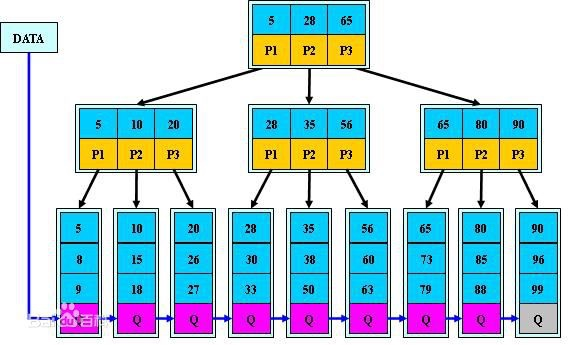
B*树
B*树是B+树的变体，在B+树的非根和非叶子结点再增加指向兄弟的指针；
B*树定义了非叶子结点关键字个数至少为(2/3)*M，即块的最低使用率为2/3（代替B+树的1/2）B+树的分裂：
当一个结点满时，分配一个新的结点，并将原结点中1/2的数据复制到新结点，最后在父结点中增加新结点的指针；
B+树的分裂只影响原结点和父结点，而不会影响兄弟结点，所以它不需要指向兄弟的指针；
B*树的分裂：
当一个结点满时，如果它的下一个兄弟结点未满，那么将一部分数据移到兄弟结点中，再在原结点插入关键字，最后修改父结点中兄弟结点的关键字（因为兄弟结点的关键字范围改变了）；
如果兄弟也满了，则在原结点与兄弟结点之间增加新结点，并各复制1/3的数据到新结点，最后在父结点增加新结点的指针；所以，B*树分配新结点的概率比B+树要低，空间使用率更高；
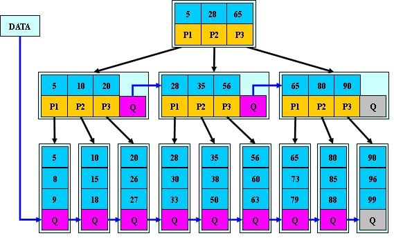
B树 B+树 B*树 总结
B-树：
多路搜索树，每个结点存储 \(┌m/2┐ - 1 <= j <= m - 1\) j个关键字，非叶子结点存储指向关键字范围的子结点；所有关键字在整颗树中出现，且只出现一次，非叶子结点可以命中；
B+树：
在B-树基础上，为叶子结点增加链表指针，所有关键字都在叶子结点中出现，非叶子结点作为叶子结点的索引；B+树总是到叶子结点才命中；
B*树：
在B+树基础上，为非叶子结点也增加链表指针，将结点的最低利用率从1/2提高到2/3；